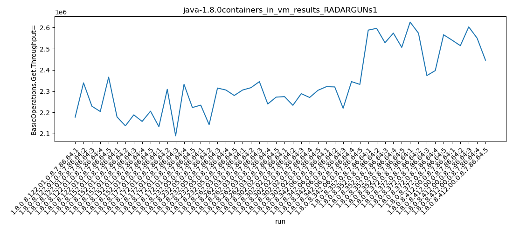

java-1.8.0 RADARGUNs1
Context at bottom
/home/jvanek/git/benchmarks-in-nested-virtualisation-toolchain/final_results/containers_in_vm_results/containers_in_vm_results_JMH
java-1.8.0
RADARGUNs1
/home/jvanek/git/benchmarks-in-nested-virtualisation-toolchain/final_results/containers_in_vm_results/containers_in_vm_results_J2DBENCH
java-1.8.0
RADARGUNs1
/home/jvanek/git/benchmarks-in-nested-virtualisation-toolchain/final_results/containers_in_vm_results/containers_in_vm_results_RADARGUNs3
java-1.8.0
RADARGUNs1
/home/jvanek/git/benchmarks-in-nested-virtualisation-toolchain/final_results/containers_in_vm_results/containers_in_vm_results_SPECJBB
java-1.8.0
RADARGUNs1
/home/jvanek/git/benchmarks-in-nested-virtualisation-toolchain/final_results/containers_in_vm_results/containers_in_vm_results_RADARGUNs1
java-1.8.0
RADARGUNs1
containers_in_vm_results_RADARGUNs1
- containers_in_vm_results_RADARGUNs1 - throughput get
- containers_in_vm_results_RADARGUNs1 - throughput put
- containers_in_vm_results_RADARGUNs1 - response mean time get
- containers_in_vm_results_RADARGUNs1 - response mean time put
containers_in_vm_results_RADARGUNs1 - throughput get
Expected number of java-1.8.0 JDKs: 10
1st avgmed_alljdks_metric:
/home/jvanek/git/benchmarks-in-nested-virtualisation-toolchain/final_results/result_processing.py /home/jvanek/git/benchmarks-in-nested-virtualisation-toolchain/final_results/containers_in_vm_results/containers_in_vm_results_RADARGUNs1 BasicOperations.Get.Throughput= False
values: [2177376, 2339239, 2229157, 2204156, 2366318, 2178538, 2136640, 2188359, 2157518, 2205759, 2132638, 2308895, 2089654, 2332406, 2222945, 2234212, 2142093, 2314771, 2305545, 2279697, 2305500, 2316559, 2345077, 2239661, 2271924, 2274411, 2233397, 2288302, 2270251, 2304190, 2321234, 2320047, 2219648, 2345154, 2332023, 2588032, 2596166, 2528517, 2573662, 2506535, 2625739, 2573268, 2373608, 2396951, 2566009, 2540825, 2514561, 2603035, 2550028, 2446089]

Expected number of iterations: 5
final number of values: 50 out of 50
Pass rate: 100.0%
values: (2089654, 2625739, 2338326.38, 2314771)

** accuracy from all jdks and runs
more is better
MIN: 2089654
MAX: 2625739
AVG: 2338326.38
MED: 2314771
Relative differences 1:
MIN-MAX: 20.0 %
MIN-AVG: 11.0 %
MIN-MED: 10.0 %
MAX-MIN: -26.0 %
MAX-AVG: -12.0 %
MAX-MED: -13.0 %
AVG-MED: -1.0 %
stored to java-1.8.0.properties. sort | uniq that!
2nd avgmed_by_jdk_metric:
values: [2263249.2, 2173362.8, 2217307.6, 2255263.6, 2295744.2, 2274110.2, 2307621.2, 2558582.4, 2507115.0, 2530907.6]

values: [2229157, 2178538, 2222945, 2279697, 2305500, 2274411, 2321234, 2573662, 2566009, 2540825]

values: (2173362.8, 2558582.4, 2338326.38, 2295744.2)
values: (2178538, 2573662, 2349197.8, 2305500)

** accuracy from all jdks where runs were avged
more is better
MIN: 2173362.8
MAX: 2558582.4
AVG: 2338326.38
MED: 2295744.2
Relative differences 1:
MIN-MAX: 15.0 %
MIN-AVG: 7.0 %
MIN-MED: 5.0 %
MAX-MIN: -18.0 %
MAX-AVG: -9.0 %
MAX-MED: -11.0 %
AVG-MED: -2.0 %
stored to java-1.8.0.properties. sort | uniq that!
** accuracy from all jdks where runs were medianed
more is better
MIN: 2178538
MAX: 2573662
AVG: 2349197.8
MED: 2305500
Relative differences 1:
MIN-MAX: 15.0 %
MIN-AVG: 7.0 %
MIN-MED: 6.0 %
MAX-MIN: -18.0 %
MAX-AVG: -10.0 %
MAX-MED: -12.0 %
AVG-MED: -2.0 %
stored to java-1.8.0.properties. sort | uniq that!
containers_in_vm_results_RADARGUNs1 - throughput put
Expected number of java-1.8.0 JDKs: 10
1st avgmed_alljdks_metric:
/home/jvanek/git/benchmarks-in-nested-virtualisation-toolchain/final_results/result_processing.py /home/jvanek/git/benchmarks-in-nested-virtualisation-toolchain/final_results/containers_in_vm_results/containers_in_vm_results_RADARGUNs1 BasicOperations.Put.Throughput= False
values: [544400, 584866, 557265, 550959, 591552, 544648, 534141, 547125, 539370, 551436, 533177, 577255, 522504, 583073, 555690, 558534, 535568, 578652, 576395, 569911, 576334, 579144, 586259, 559949, 567991, 568658, 558395, 572069, 567564, 576052, 580303, 579933, 554896, 586332, 582998, 647009, 649030, 632068, 643471, 626670, 656394, 643300, 593386, 599228, 641469, 635234, 628610, 650742, 637495, 611474]

Expected number of iterations: 5
final number of values: 50 out of 50
Pass rate: 100.0%
values: (522504, 656394, 584579.56, 578652)

** accuracy from all jdks and runs
more is better
MIN: 522504
MAX: 656394
AVG: 584579.56
MED: 578652
Relative differences 1:
MIN-MAX: 20.0 %
MIN-AVG: 11.0 %
MIN-MED: 10.0 %
MAX-MIN: -26.0 %
MAX-AVG: -12.0 %
MAX-MED: -13.0 %
AVG-MED: -1.0 %
stored to java-1.8.0.properties. sort | uniq that!
2nd avgmed_by_jdk_metric:
values: [565808.4, 543344.0, 554339.8, 563812.0, 573935.4, 568547.6, 576892.4, 639649.6, 626755.4, 632711.0]

values: [557265, 544648, 555690, 569911, 576334, 568658, 580303, 643471, 641469, 635234]

values: (543344.0, 639649.6, 584579.5599999999, 573935.4)
values: (544648, 643471, 587298.3, 576334)

** accuracy from all jdks where runs were avged
more is better
MIN: 543344.0
MAX: 639649.6
AVG: 584579.5599999999
MED: 573935.4
Relative differences 1:
MIN-MAX: 15.0 %
MIN-AVG: 7.0 %
MIN-MED: 5.0 %
MAX-MIN: -18.0 %
MAX-AVG: -9.0 %
MAX-MED: -11.0 %
AVG-MED: -2.0 %
stored to java-1.8.0.properties. sort | uniq that!
** accuracy from all jdks where runs were medianed
more is better
MIN: 544648
MAX: 643471
AVG: 587298.3
MED: 576334
Relative differences 1:
MIN-MAX: 15.0 %
MIN-AVG: 7.0 %
MIN-MED: 5.0 %
MAX-MIN: -18.0 %
MAX-AVG: -10.0 %
MAX-MED: -12.0 %
AVG-MED: -2.0 %
stored to java-1.8.0.properties. sort | uniq that!
containers_in_vm_results_RADARGUNs1 - response mean time get
Expected number of java-1.8.0 JDKs: 10
1st avgmed_alljdks_metric:
/home/jvanek/git/benchmarks-in-nested-virtualisation-toolchain/final_results/result_processing.py /home/jvanek/git/benchmarks-in-nested-virtualisation-toolchain/final_results/containers_in_vm_results/containers_in_vm_results_RADARGUNs1 BasicOperations.Get.ResponseTimeMean True
values: [1546, 1545, 1515, 1538, 1542, 1739, 1757, 1547, 1738, 1531, 1758, 1569, 1726, 1579, 1715, 1736, 1552, 1580, 1714, 1693, 1702, 1585, 1590, 1734, 1598, 1734, 1720, 1558, 1632, 1647, 1607, 1572, 1751, 1584, 1583, 1469, 1396, 1529, 1476, 1590, 1398, 1423, 1658, 1448, 1473, 1449, 1567, 1426, 1558, 1534]

Expected number of iterations: 5
final number of values: 50 out of 50
Pass rate: 100.0%
values: (1396, 1758, 1592.22, 1580)

** accuracy from all jdks and runs
more is worse
MIN: 1758
MAX: 1396
AVG: 1592.22
MED: 1580
Relative differences 1:
MIN-MAX: 26.0 %
MIN-AVG: 10.0 %
MIN-MED: 11.0 %
MAX-MIN: -21.0 %
MAX-AVG: -12.0 %
MAX-MED: -12.0 %
AVG-MED: 1.0 %
stored to java-1.8.0.properties. sort | uniq that!
2nd avgmed_by_jdk_metric:
values: [1537.2, 1662.4, 1669.4, 1655.0, 1641.8, 1658.2, 1619.4, 1492.0, 1480.0, 1506.8]

values: [1542, 1738, 1715, 1693, 1598, 1647, 1584, 1476, 1448, 1534]
values: (1480.0, 1669.4, 1592.22, 1641.8)
values: (1448, 1738, 1597.5, 1598)

** accuracy from all jdks where runs were avged
more is worse
MIN: 1669.4
MAX: 1480.0
AVG: 1592.22
MED: 1641.8
Relative differences 1:
MIN-MAX: 13.0 %
MIN-AVG: 5.0 %
MIN-MED: 2.0 %
MAX-MIN: -11.0 %
MAX-AVG: -7.0 %
MAX-MED: -10.0 %
AVG-MED: -3.0 %
stored to java-1.8.0.properties. sort | uniq that!
** accuracy from all jdks where runs were medianed
more is worse
MIN: 1738
MAX: 1448
AVG: 1597.5
MED: 1598
Relative differences 1:
MIN-MAX: 20.0 %
MIN-AVG: 9.0 %
MIN-MED: 9.0 %
MAX-MIN: -17.0 %
MAX-AVG: -9.0 %
MAX-MED: -9.0 %
AVG-MED: -0.0 %
stored to java-1.8.0.properties. sort | uniq that!
containers_in_vm_results_RADARGUNs1 - response mean time put
Expected number of java-1.8.0 JDKs: 10
1st avgmed_alljdks_metric:
/home/jvanek/git/benchmarks-in-nested-virtualisation-toolchain/final_results/result_processing.py /home/jvanek/git/benchmarks-in-nested-virtualisation-toolchain/final_results/containers_in_vm_results/containers_in_vm_results_RADARGUNs1 BasicOperations.Put.ResponseTimeMean True
values: [6340, 6676, 6286, 6476, 6384, 6542, 6517, 6701, 6487, 6429, 6596, 6507, 6732, 6409, 6601, 6581, 6532, 6560, 6480, 6597, 6371, 6648, 6326, 6433, 6812, 6513, 6536, 6746, 6660, 6574, 6488, 6637, 6363, 6481, 6707, 5816, 5902, 6161, 6080, 6049, 5966, 6005, 6086, 6077, 6066, 6108, 5933, 6007, 5874, 6008]

Expected number of iterations: 5
final number of values: 50 out of 50
Pass rate: 100.0%
values: (5816, 6812, 6377.32, 6480)

** accuracy from all jdks and runs
more is worse
MIN: 6812
MAX: 5816
AVG: 6377.32
MED: 6480
Relative differences 1:
MIN-MAX: 17.0 %
MIN-AVG: 7.0 %
MIN-MED: 5.0 %
MAX-MIN: -15.0 %
MAX-AVG: -9.0 %
MAX-MED: -10.0 %
AVG-MED: -2.0 %
stored to java-1.8.0.properties. sort | uniq that!
2nd avgmed_by_jdk_metric:
values: [6432.4, 6535.2, 6569.0, 6550.0, 6518.0, 6605.8, 6535.2, 6001.6, 6040.0, 5986.0]

values: [6384, 6517, 6596, 6560, 6433, 6574, 6488, 6049, 6066, 6007]

values: (5986.0, 6605.8, 6377.32, 6535.2)
values: (6007, 6596, 6367.4, 6488)

** accuracy from all jdks where runs were avged
more is worse
MIN: 6605.8
MAX: 5986.0
AVG: 6377.32
MED: 6535.2
Relative differences 1:
MIN-MAX: 10.0 %
MIN-AVG: 4.0 %
MIN-MED: 1.0 %
MAX-MIN: -9.0 %
MAX-AVG: -6.0 %
MAX-MED: -8.0 %
AVG-MED: -2.0 %
stored to java-1.8.0.properties. sort | uniq that!
** accuracy from all jdks where runs were medianed
more is worse
MIN: 6596
MAX: 6007
AVG: 6367.4
MED: 6488
Relative differences 1:
MIN-MAX: 10.0 %
MIN-AVG: 4.0 %
MIN-MED: 2.0 %
MAX-MIN: -9.0 %
MAX-AVG: -6.0 %
MAX-MED: -7.0 %
AVG-MED: -2.0 %
stored to java-1.8.0.properties. sort | uniq that!
/home/jvanek/git/benchmarks-in-nested-virtualisation-toolchain/final_results/containers_in_vm_results/containers_in_vm_results_DACAPO
java-1.8.0
RADARGUNs1
pass rates:
containers_in_vm_results_RADARGUNs1=100.0%
Context:
- containers_in_vm_results
- RADARGUNs1